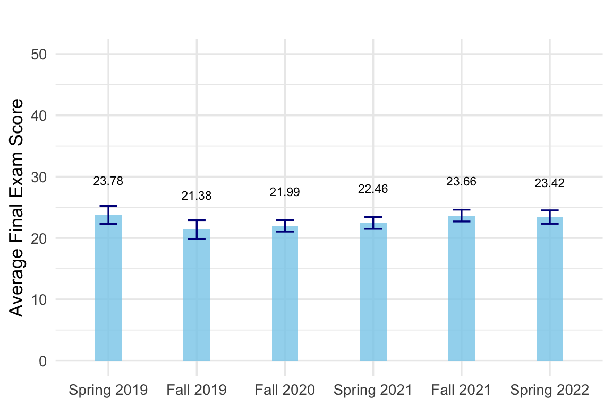
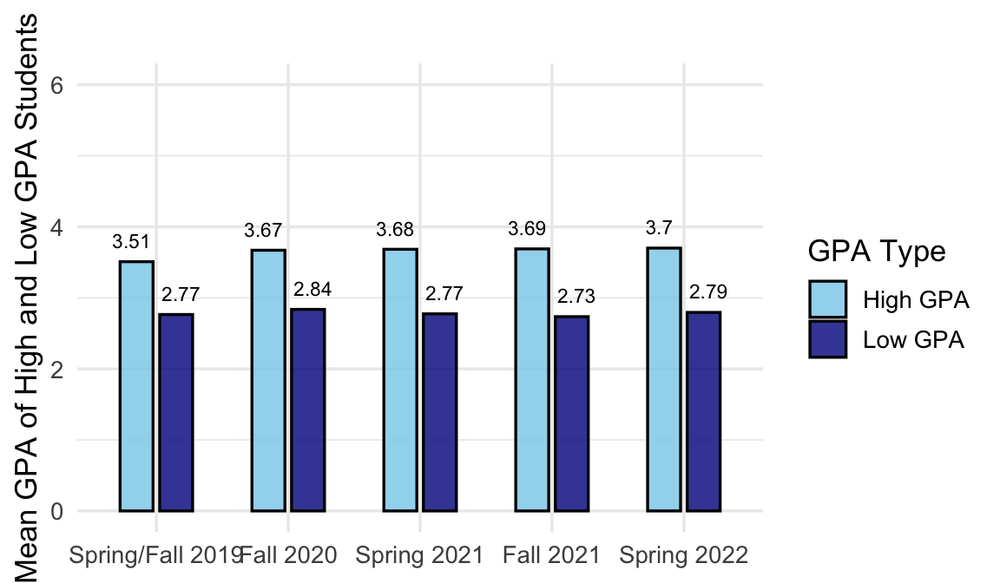

| (1) | (2) | (3) | (4) | |
|---|---|---|---|---|
| postcovid | -1.151 | -0.019*** | ||
| (0.744) | (0.007) | |||
| fall 2020 | 1.308 | -0.102*** | ||
| (1.504) | (0.013) | |||
| spring 2021 | -5.760*** | -0.082*** | ||
| (1.135) | (0.015) | |||
| fall 2021 | 5.643*** | -0.019** | ||
| (1.169) | (0.010) | |||
| spring 2022 | -6.954*** | -0.088*** | ||
| (1.370) | (0.012) | |||
| Num.Obs. | 4598 | 4598 | 47589 | 47589 |
| R2 | 0.209 | 0.223 | 0.036 | 0.039 |
| Note: * p { |
Effects of COVID-19 on the Academic Performance of College Students
Abstract
I analyze the impact of the COVID-19 pandemic on undergraduates’ performance in an introductory economics course at a large public university. One challenge in analyzing student academic outcomes during the pandemic was the explicit change in grading policies by college administrators as well as the implicit adjustment by faculty designed to mitigate the impact of an abrupt shift to online learning amidst the stress and uncertainly associated with the pandemic. To limit the impact of grading policies I analyze changes in the raw scores on a common final administered to all sections of the course the year before and for four semesters after the spring of 2020. To limit variation in the difficulty of the exams from before to during the pandemic, I compare student performance on nearly identical questions on the final exam overtime. Adjusted mean scores on the common final fell by a point and the probability of answering the qualitatively same question on the final fell, on average, by 1.5 percentage points. Students with lower GPAs were 3.3 percentage points (or 0.02 standard deviations) less likely to answer similar questions correctly relative to students with higher GPAs during the pandemic. Also, the mean probability of answering a nearly identical question before and after suddenly moving to online classes increased by 5.6 percentage points.
Keywords
COVID-19
Introduction
The COVID-19 pandemic of March 2020 was disruptive across many domains, with higher education being one of them. Policies were implemented worldwide in response to this global crisis, resulting in changes in the educational setting. Educational instructions were abruptly moved online without prior preparation. This had a negative effect on primary and secondary education, leading to significant learning loss for students (Grewenig et al. 2021; Fuchs-Schündeln 2022).
Although the socioeconomic consequences of COVID-19 have been extensively studied from various perspectives, research on the impact of the pandemic on college students remains limited and yields conflicting results. Most studies examining the impact of the pandemic on students’ academic performance measure outcomes such as GPA and course completion rates. Although useful, these measures are confounded by the numerous responses of students, faculty, and administrators during the pandemic. For example, cheating became a challenging issue in the rapid move to online teaching (Ives and Cazan 2024; Jenkins et al. 2023; Walsh et al. 2021). The faculty adopted more lenient grading practices and reduced exam difficulties. Administrators altered grading policies regarding course withdrawals and pass/fail options (Rodríguez-Planas 2022). These responses made comparisons with pre-pandemic test scores, or the term GPA less reliable for quantifying learning loss during the pandemic in college students.
I overcome these assessment and grading issues using unique exam-level data from a large public university in New York City. First, I analyze students’ performance on final exams before and during the pandemic in an introductory microeconomics course. Approximately 800 students across ten sections of the course attempted a common final exam each semester. This reduces the variation in the difficulty of exams across sections. However, the difficulty of an exam may have changed in response to the pandemic. Thus, I compare students’ performance on specific exam questions that were qualitatively almost identical before and during the pandemic by matching questions from answer sheets from the common final exams before and during the pandemic. By focusing on students’ performance on nearly identical questions before and during the pandemic, I remove the variation in outcomes due to possible changes in the difficulty of these exams during the pandemic. By combining the matched question-level data with student characteristics, I estimated how the pandemic affected students’ average probability of correctly answering similar questions from pre-pandemic common exams during the crisis.
I begin with a before and after analysis, adjusting for student characteristics, time periods, and instructor fixed effects. I argue that more capable students are more likely to adjust to online instruction more effectively. Thus, I used a difference-in-difference design and compared students with pre-course GPA above (high GPA) and below (low GPA) the median before and during the pandemic. I observed that during the pandemic, low-GPA students were less likely to answer qualitatively similar questions from the pre-pandemic exams relative to students with higher GPAs. My analysis of dynamic effects reveals that by spring 2022, the performance gap persisted between low and high GPA students, both in overall exam scores and in their likelihood of correctly answering nearly identical questions compared with pre-pandemic levels.
I also analyzed the students’ performance on matched questions by difficulty level. I found no statistically significant impact of the pandemic on low GPA students’ average probability of answering nearly identical “easy” questions correctly, but I found significant effect on their performance with nearly identical hard questions. I also provide a similar analysis comparing outcomes between students enrolled in online and hybrid classes. My findings align with existing research on learning loss during this period. By analyzing the performance of qualitatively similar exam questions before and during the pandemic, I contribute to the literature by offering more reliable estimates of learning loss compared to traditional metrics, such as GPA and course withdrawals.
The next section reviews the current literature on the effects of the pandemic on college students’ academic outcomes. Section 3 discusses the data, section 4 explains the estimation strategy, section 5 reports the results, and section 6 concludes the paper.
Literature Review
Most early studies analyzing the impact of COVID-19 on undergraduate student outcomes were based on surveys about their experiences during the pandemic. Jaeger et al. (2021) was the first to document the negative impact of the COVID-19 pandemic using surveys administered to university students in 28 universities in the United States, Spain, Australia, Sweden, Austria, Italy, and Mexico between April and October 2020. Their preliminary results reported disparate impacts on different socio-economic and demographic groups. Aucejo et al. (2020), one of the first papers studying the effect of COVID-19 on college student outcomes, surveyed 1,500 students at a large public university in the United States. They found significant negative effects of the pandemic on student outcomes. Due to the pandemic, 13% of students delayed graduation, 40% lost a job, internship, or offer, and 29% expected an earnings loss by age 35. They also found large disparate impacts of the pandemic across socio-economic statuses. Lower-income students were 55% more likely than their higher-income peers to have delayed graduation due to COVID-19.
Along the same lines, Rodríguez-Planas (2020) collected data on students’ experiences during the pandemic using an online survey at an urban public college in New York City in the summer of 2020. The author found significant disruptions in students’ lives due to the pandemic. Because of COVID, between 14% and 34% of students considered dropping a class during spring 2020, 30% modified their graduation plans, and the freshman fall retention rate dropped by 26%. The pandemic also deprived 39% of students of their jobs, reduced the earnings of 35%, and decreased the expected household income of 64%. Pell grant recipients (students from lower-income families) were 20% more likely to lose a job due to the pandemic and 17% more likely to experience earning losses than non-Pell recipients. Other vulnerable groups, such as first-generation and transfer students, were relatively more affected. Since they seem to rely less on financial aid and more on income from wage and salary jobs, both their educational and employment outcomes were more negatively impacted by the pandemic compared to students whose parents also attended college or those who began college as freshmen.
The pandemic’s impact on student learning was largely driven by the sudden shift to remote instruction. Literature on remote learning shows various approaches including fully remote, software-assisted, and hybrid learning4. While online learning offers cost benefits and wider accessibility, research indicates mixed results. Studies using randomized trials found that students in remote formats generally performed worse than those in traditional settings (Joyce et al. (2015), Alpert, Couch, and Harmon (2016)). Bettinger et al. (2017) and Cacault et al. (2021) found that online learning particularly disadvantaged lower-performing students. Multiple analyses have demonstrated that online courses lead to lower completion rates, grades, and persistence (Jaggars and Xu 2016; Xu and Xu 2019).
Several studies attempt to use the pandemic as an exogenous shock to measure the impact of remote learning on college students’ outcomes. For instance, in their study, Altindag, Filiz, and Tekin (2021) analyzed administrative data from a public university and employed a fixed effects model. They examine the effect of the change in learning modality due to the pandemic on students’ learning outcomes. They found that the online instruction mode led to lower grades and an increased likelihood of course withdrawal. Students who have had greater exposure to in-person instruction have a lower likelihood of course repetition, a higher probability of graduating on time, and achieving a higher graduation GPA. Additionally, they observed that the difference in student performance between in-person and online courses tended to diminish over time in the post-pandemic era.
In the fall of 2020, Kofoed et al. (2021) randomized 551 West Point students in a required introductory economics course across twelve instructors into either an online or in-person class. They found that final grades for online students dropped by 0.215 standard deviations. This result was apparent in both assignments and exams and was largest for academically at-risk students. Additionally, using a post-course survey, they found that online students struggled to concentrate in class and felt less connected to their instructors and peers. They conclude that the shift to online education had negative effects on learning. Using data on Virginia community college students, Bird, Castleman, and Lohner (2022) applied a difference-in-differences research design leveraging instructor fixed effects and student fixed effects to estimate the impact of the transition to online learning due to the pandemic. Their results show a modest negative impact of 3% - 6% on course completion. Additionally, their findings suggest that faculty experience in delivering online lectures does not mitigate the negative effects. In their exploratory analyses, they find minimal long-term effects of the switch to online learning.
A comprehensive study by Bonacini, Gallo, and Patriarca (2023), disentangle the channels through which the pandemic affected students. They use admin data from 2018-2021 of 36,000 university students in Italy who took about 400,000 exams during this period. They examine the overall effect of the pandemic on students’ exam scores in different courses. Additionally, they explore the effect of the transition to remote learning by using COVID as an exogenous shock with a difference-in-differences design. Their findings show that during the pandemic, students performed better, with an increase in exam scores. However, the abrupt move to remote learning decreased students’ exam scores.
Studies using survey data on students discussed above have found a negative impact of COVID-related disruptions on academic performance. However, studies that use measured outcomes to evaluate academic performance report mixed results, especially immediately after the pandemic began (Bird, Castleman, and Lohner 2022; Bonacini, Gallo, and Patriarca 2023). One reason for this might be that many institutions temporarily implemented policies to reduce the burden on students during the pandemic, particularly due to the sudden transition from traditional to fully remote learning. Instructors were likely more lenient in setting exam questions and grading, and more willing to accommodate students than before the pandemic. The sudden move to remote learning could have also created more opportunities for misbehavior by students during exams. For instance, Rodríguez-Planas (2022), using data from Queens College, found that lower-income students were 35 percent more likely to utilize the flexible pass/fail grading policy. While no GPA advantage is observed among top-performing lower-income students, in the absence of the flexible grading policy these students would have seen their GPA decrease by 5% relative to their pre-pandemic mean.
The literature has provided valuable insights into the impact of the COVID-19 pandemic on undergraduates. However, several issues remain to be addressed. Many studies rely on self-reported survey data, which may not accurately capture the true extent of learning loss (Aucejo et al. 2020; Rodríguez-Planas 2020). I identify two major limitations in these recent studies. First, using course completion rates, course GPAs, or end-of-semester GPAs to measure academic outcomes immediately after COVID-19 hit in March may not accurately reflect students’ actual learning or learning loss. Second, the pandemic-driven sudden transition to new instruction modalities likely changed assessment methods as instructors and students took time to adjust to the situation. The difficulty of exams immediately after the adjustment may not have been the same as pre-COVID exams, contributing to inaccurate measurement of learning loss. Additionally, the implementation of flexible grading policies may have biased the effect of the pandemic on course GPA or course completion rates. I contribute to the literature in two ways. To address these limitations, I analyze students’ performance on common exams before and during the pandemic. To eliminate variation due to changes in the difficulty of exams during the pandemic, I examine students’ performance on nearly identical questions from exams before and during the pandemic to measure learning loss.
Data
The data used in this study are derived from two primary sources, covering the years 2019–2022. Firstly, I obtain information on students’ performance in the common final exams of the introductory microeconomics course, offered at a large public university in New York City. It is offered every semester and taught by multiple instructors. Each year, at least 700 students enroll in the course.
The department offers this course in three modes. Hybrid classes run twice a week, with one in-person meeting and one fully remote session each week. Online classes are entirely remote, with lectures delivered by professors using software. In spring 2019 and fall 2019, the courses were offered in mostly hybrid mode but with one large online section. During the pandemic in fall 2020, spring 2021, fall 2021, and spring 2022, the courses were fully online and hybrid. One section in 2022 was offered in person. I do not include those students in the analyses to facilitate the comparison between the efficacy of hybrid and online learning modes. Although the course is taught by multiple instructors with different instruction modalities, all students enrolled in the course are required to take a common final exam. Using students’ performance in these common exams removes the variation in the difficulty of questions set by the instructors. These exams are multiple choice, and the maximum possible points are 40. I obtain the answer sheets of the students who attempted these exams with information on their final score, their performance on each question, the course instructors, and learning mode of the course.
I use two outcomes to measure students’ academic performance. First, I use their scores on common final exams with maximum 40 possible points. This is a better measure of performance than course GPA or course completion rate since during the pandemic, a flexible grading policy was adopted. According to the university policy, students were allowed to drop the course on the last day of the semester after attempting the final exam or take the course for credit and move to the next semester. I also look at a more granular level. Since the final exams in introductory microeconomics are common, I can match nearly identical questions from these exams conducted before and during the pandemic. The answer sheet contains both the questions and their corresponding answers provided by the students. By analyzing the answer sheet, I am able to determine whether a student has answered a question correctly. The department would offer both hybrid and online course before the pandemic hit in March 2020. There are two versions of the exams taken by the students. The only difference between the versions is that the questions are ordered differently to reduce cheating. To facilitate the comparison, I have manually matched pairs of same or similar questions from the final exams before and after the onset of the pandemic5. I could not obtain the data for spring 2020.
The second dataset is the institutional data on students who were enrolled in introductory microeconomics during the aforementioned semesters6. This administrative dataset includes various information such as the students’ gender, race, age, GPA, whether they are transfer students, whether they are part-time students, their native language, and their classification (freshman, sophomore, junior, or senior). By merging these two datasets, I can create a comprehensive set of data that includes both the characteristics of the students and their exams scores, with exam level characteristics also including learning modality, course instructor, semester in which the exam was taken, and the exam version. I also merge this data with the matched question level data where I identified pairs of similar questions from the common exams pre and during the pandemic. To the best of my knowledge, this dataset is the first of its kind to examine the impact of COVID-19 on student performance at such a granular level with a standardized outcome variable.
My analytical sample includes 4,655 students enrolled in introductory microeconomics course, with a total of 47,589 observations once the similar exam questions from before and after the pandemic are matched. Here, the outcome variable is correct, which equals 1 if a student correctly answered the question, and 0 otherwise. Each observation is a student-question pair, indicating whether the student got the answer to the question correct or not. Some observations have missing data, including missing GPA values. For the majority of students, I use their cumulative GPA prior to the start of the semester. If a student’s cumulative GPA before the semester’s start is unavailable, I substitute it with the GPA calculated at the end of that semester. If both values are unavailable, I impute it with the mean GPA from their respective semester.
Estimation Strategy
I analyze students’ performance using multiple outcomes. I first look at their scores in the common final exam in introductory microeconomics. I then use their performance on matched questions from these common final exams.
The baseline specification is as follows:
\[ y_{i,c,t} = \delta P_{t} + \beta X_{i,c,t} + \gamma_{c} + \alpha_{s} + \epsilon_{i,c,t} \]
\(X_{i,c,t}\) is the vector of individual-level controls that include students’ demographic characteristics such as race and gender. Student’s race and gender enter the specification as dummy variables. I include dummies for each race: Black, Asian, non-White Hispanic, and others, keeping White as the benchmark category. A dummy variable for gender is labeled as female, which is 1 if a student is female and 0 if male. There is also a dummy variable for being at most a sophomore student to account for where students are in the path of completing their degree. To account for student ability I control for their cumulative GPA before the start of the semester in which the students were enrolled in the course.
\(P_{t}\) is a dummy variable for the pandemic period, which is 1 for the exam taken in pandemic period and zero otherwise. Since the pandemic hit in March 2020, all the semesters after fall 2019 are considered to be in the pandemic period. \(\epsilon_{i,c,t}\) is the error term. The coefficient on \(P_{t}\) is of my interest which reflects the effect of the pandemic on student performance as documented by the most studies in the literature mentioned above.
As stated earlier, there are multiple outcome variables by which I measure student performance. In one set of regressions, y is student i score in the common final exam out if possible 40. In the other, y is a binary outcome variable which is 1 if the student answered the question correctly and 0 otherwise. Both sets of regressions are estimated using OLS and heteroskedasticity robust standard errors are used.
\(y_{i,c,t}\) is the student academic outcome for which I use multiple measures. The first set of regressions takes outcome as points scored by the students in the common final exam out of total possible 40 points. In the second set of regressions I use the matched question pairs from the common exams in the course pre and post pandemic period. Hence, this set of regressions will have a binary outcome which is 1 if a student answers the question correctly and 0 otherwise. Using OLS to estimate this linear probability model, I can see the impact of the pandemic on the average probability of students answering a similar question in pandemic period common exams compared to pre-pandemic common exams. The baseline specification will change slightly for this outcome as follows.
\[ y_{i,c,q,t} = \delta P_{t} + \beta X_{i,c,q,t} + \gamma_{c} + \alpha_{s} + \epsilon_{i,c,q,t} \]
\(y_{i,c,q,t}\) will be the student i’s outcome in question q in a class taught by instructor c in semester t. All the control variables on the right hand side will remain the same as described in the first specification. \(\gamma_{c}\) in both versions of the baseline specification is instructor fixed effects. \(\alpha_{s}\) in both specifications is session fixed effects.
Identification of differential impact of COVID on low vs high GPA students
I also take a closer look at the differential impact of the pandemic on students with low GPA compared to high GPA students. I define low GPA students using a cutoff based on the median cumulative GPA. Students with a GPA less than the median GPA of 3.32 are classified as low GPA students, and those with a GPA of 3.32 or higher are classified as high GPA students.
The regression specification builds on the baseline specification in equation 1. For both outcomes, exam scores and question-level outcomes, the specification remains similar. The following is the specification for exam scores as the outcome variable.
\[ y_{i,c,t} = \delta P_{t} + \phi L_{i} + \mu P_{t} \times L_{i} + \beta X_{i,c,t} + \gamma_{c} + \alpha_{s} + \epsilon_{i,c,t} \]
Here, variable \(L_{i}\) is a dummy variable representing students in the low GPA group. \(L_{i}\) takes a value of 1 if a student is in the low GPA group and 0 if a student is in the high GPA group. \(\mu\) is the coefficient in which I am interested. A negative value of this coefficient will support the hypothesis of higher learning loss during the pandemic for low GPA students compared to high GPA students. Instructor and session fixed effects are included. All the included student-level covariates are the same as in equation 1, except for cumulative GPA.
Identification of the effect of sudden transition to remote learning
So far, with all previous specifications, I can estimate the pandemic’s impact on student outcomes. The coefficients I obtain represent the overall effect of the pandemic on students’ academic performance. One main driver of the negative impact on academic performance is the sudden transition to a new learning modality. This sudden change affected both students and instructors, disrupting the learning process. I attempt to disentangle this impact of sudden change in learning modality due to the pandemic from the overall impact of the pandemic on students’ academic performance. As previously mentioned in the data section, during the time in consideration, the department of economics offered introductory microeconomics course to the students using two modalities. Hybrid mode that included 1 lecture in person and other online during a regular week and online classes were completely remote. Pandemic in March 2020 led to a sudden transition to online classes for all students in the course. This exogenous shock allows me to look at the impact of this sudden transition to remote learning mode during the pandemic period. I identify the impact of pandemic induced movement to remote learning by estimating a DiD specification as follows.
\[ y_{i,c,t} = \delta P_{t} + \phi O_{i} + \mu P_{t} \times O_{i} + \beta X_{i,c,t} + \gamma_{c} + \alpha_{s} + \epsilon_{i,c,t} \]
As with the specification 3, I only show the equation for exam scores as the outcome. The specification will be the same for question-level outcome. Here, variable \(O_{i}\) is a dummy variable representing students in classes with different modes of instruction. \(O_{i}\) takes a value of 1 if a student is enrolled in an online class and 0 if a student is in a hybrid class. \(\mu\) is the coefficient in which I am interested. A negative value of this coefficient will result in learning loss for the students during the pandemic due to an abrupt transition to remote classes. Again, instructor and session fixed effects are included. All the included student-level covariates are the same as in equation 1, except for their instruction mode.
Results
Average Course GPA Across Semesters in ECO 1001
An important argument I make in this paper is that student performance is mostly measured using course completion, withdrawal rates, or GPA in the literature currently. These may not be good measures of academic performance during the pandemic, given that most educational institutions adopted flexible grading policies to reduce the burden on students due to pandemic-related disruptions.
In Figure 1, I show how the unadjusted average GPA in course ECO 1001 changes over time. I see an abrupt jump in course GPA in spring 2020 when the pandemic started. According to student surveys mentioned in the literature review, students faced hardships and struggled in their studies due to the disruption in their environment. Although these GPAs decreased in fall 2020 and spring 2021, they did not return to pre-pandemic levels until after fall 2021.
Using course GPA as a measure of student performance contradicts students’ experiences. A sudden change in the educational setting also affected instructors, who might have become more lenient with grading. This change could have led to common exams being held online, giving students more opportunities for possible misconduct. The possible negative impact of the pandemic on students’ actual performance could be overshadowed by these changes in institutional policies and educational settings.
Withdrawal Rate Across Semesters in ECO 1001
Another possible mechanism leading to the opposing change in measured performance is that the institution in consideration, like many other academic institutions, adopted a flexible grading policy to help students face the challenges due to the pandemic. This policy aimed to reduce the burden on students by providing three options up until the last day of the semester. The first option, Credit (CR), allowed students to pass the course with credit, though their grade wouldn’t affect their GPA. The second, No Credit (NC), let students complete the course without credit, allowing them to retake it later without any record of their withdrawal. The third was the standard course withdrawal option.
Figure 2 shows the unadjusted withdrawal rates across semesters in ECO 1001. The course withdrawal rate decreased to 0.83% in fall 2019, down from 4.97% in spring 2019. However, it increased again to 3.92% in spring 2020, a semester heavily influenced by the onset of the pandemic. Despite the pandemic, the withdrawal rate was kept relatively low due to the introduction of a flexible grading policy by the college. As shown in the figure, 29.75% of students enrolled in ECO 1001 chose the CR option, while 5.53% chose NC. Because of this flexibility, only 3.92% of students opted for a standard withdrawal in spring 2020. The withdrawal rate increased to 6.65% in fall 2020 and remained roughly at that level, reaching around 8% in spring 2022. It is worth noting that the flexible grading policy was not implemented after spring 2020. Using course GPA or course completion rate in presence of a flexible grading policy may not give me a clear effect of the pandemic on students’ academic outcomes and their learning loss.
Baseline Specification
References
Alpert, William T., Kenneth A. Couch, and Oskar R. Harmon. 2016. “A Randomized Assessment of Online Learning.” American Economic Review 106 (5): 378–82. https://doi.org/10.1257/aer.p20161057.
Altindag, Duha Tore, Elif S. Filiz, and Erdal Tekin. 2021. “Is Online Education Working?” Working {Paper}. Working Paper Series. National Bureau of Economic Research. https://doi.org/10.3386/w29113.
Aucejo, Esteban M., Jacob French, Maria Paola Ugalde Araya, and Basit Zafar. 2020. “The Impact of COVID-19 on Student Experiences and Expectations: Evidence from a Survey.” Journal of Public Economics 191 (November): 104271. https://doi.org/10.1016/j.jpubeco.2020.104271.
Bettinger, Eric P., Lindsay Fox, Susanna Loeb, and Eric S. Taylor. 2017. “Virtual Classrooms: How Online College Courses Affect Student Success.” American Economic Review 107 (9): 2855–75. https://doi.org/10.1257/aer.20151193.
Bird, Kelli A., Benjamin L. Castleman, and Gabrielle Lohner. 2022. “Negative Impacts from the Shift to Online Learning During the COVID-19 Crisis: Evidence from a Statewide Community College System.” AERA Open 8 (1). https://doi.org/10.1177/23328584221081220.
Bonacini, Luca, Giovanni Gallo, and Fabrizio Patriarca. 2023. “Unraveling the Controversial Effect of Covid-19 on College Students’ Performance.” Scientific Reports 13 (1): 15912. https://doi.org/10.1038/s41598-023-42814-7.
Cacault, M Paula, Christian Hildebrand, Jérémy Laurent-Lucchetti, and Michele Pellizzari. 2021. “Distance Learning in Higher Education: Evidence from a Randomized Experiment.” Journal of the European Economic Association 19 (4): 2322–72. https://doi.org/10.1093/jeea/jvaa060.
Escueta, Maya, Vincent Quan, Andre Joshua Nickow, and Philip Oreopoulos. 2017. “Education Technology: An Evidence-Based Review,” August, w23744. https://doi.org/10.3386/w23744.
Fuchs-Schündeln, Nicola. 2022. “Covid-Induced School Closures in the US and Germany: Long-Term Distributional Effects.” CESifo Working Paper Series. https://ideas.repec.org//p/ces/ceswps/_9698.html.
Grewenig, Elisabeth, Philipp Lergetporer, Katharina Werner, Ludger Woessmann, and Larissa Zierow. 2021. “COVID-19 and Educational Inequality: How School Closures Affect Low- and High-Achieving Students.” European Economic Review 140 (November): 103920. https://doi.org/10.1016/j.euroecorev.2021.103920.
Ives, Bob, and Ana-Maria Cazan. 2024. “Did the COVID-19 Pandemic Lead to an Increase in Academic Misconduct in Higher Education?” Higher Education 87 (1): 111–29. https://doi.org/10.1007/s10734-023-00996-z.
Jaeger, David A., Jaime Arellano-Bover, Krzysztof Karbownik, Marta Martínez Matute, John M. Nunley, Jr Seals, Miguel Almunia, et al. 2021. “The Global COVID-19 Student Survey: First Wave Results.” Working {Paper} 14419. IZA Discussion Papers. https://www.econstor.eu/handle/10419/236450.
Jaggars, Shanna Smith, and Di Xu. 2016. “How Do Online Course Design Features Influence Student Performance?” Computers & Education 95 (April): 270–84. https://doi.org/10.1016/j.compedu.2016.01.014.
Jenkins, Baylee D., Jonathan M. Golding, Alexis M. Le Grand, Mary M. Levi, and Andrea M. Pals. 2023. “When Opportunity Knocks: College Students’ Cheating Amid the COVID-19 Pandemic.” Teaching of Psychology 50 (4): 407–19. https://doi.org/10.1177/00986283211059067.
Joyce, Ted, Sean Crockett, David A. Jaeger, Onur Altindag, and Stephen D. O’Connell. 2015. “Does Classroom Time Matter?” Economics of Education Review 46 (June): 64–77. https://doi.org/10.1016/j.econedurev.2015.02.007.
Kofoed, Michael S., Lucas Gebhart, Dallas Gilmore, and Ryan Moschitto. 2021. “Zooming to Class?: Experimental Evidence on College Students’ Online Learning During COVID-19.” https://www.iza.org/publications/dp/14356/zooming-to-class-experimental-evidence-on-college-students-online-learning-during-covid-19.
Rodríguez-Planas, Núria. 2020. “Hitting Where It Hurts Most: Covid-19 and Low-Income Urban College Students.” {SSRN} {Scholarly} {Paper}. Rochester, NY. https://doi.org/10.2139/ssrn.3682958.
———. 2022. “COVID-19, College Academic Performance, and the Flexible Grading Policy: A Longitudinal Analysis.” Journal of Public Economics 207 (March): 104606. https://doi.org/10.1016/j.jpubeco.2022.104606.
Walsh, Lisa L., Deborah A. Lichti, Christina M. Zambrano-Varghese, Ashish D. Borgaonkar, Jaskirat S. Sodhi, Swapnil Moon, Emma R. Wester, and Kristine L. Callis-Duehl. 2021. “Why and How Science Students in the United States Think Their Peers Cheat More Frequently Online: Perspectives During the COVID-19 Pandemic.” International Journal for Educational Integrity 17 (1): 1–18. https://doi.org/10.1007/s40979-021-00089-3.
Xu, Di, and Ying Xu. 2019. “The Promises and Limits of Online Higher Education: Understanding How Distance Education Affects Access, Cost, and Quality.” American Enterprise Institute. https://eric.ed.gov/?id=ED596296.
Appendix
Average final exam scores in ECO 1001 across semesters

Average GPA in low and high GPA groups in ECO 1001 across semesters

Example of a Matched-Question
As explained earlier, I were able to match 35 pairs of nearly identical questions from pre-pandemic common exams to exams conducted during the pandemic. I provide an example of one such question below that was similar in common final exams in fall 2019 and fall 2020 which was deemed to be hard by the instructors. Full list of matched questions are provided in a separate document.
Fall 2019 version
Scenario 2, Monopoly: Let the following equations the market for energy for ConEd, a monopolist: \(P=56-2Q\), \(MR=56-4Q\), \(TC=50+6Q+3Q^2\), \(MC=6+6Q\)
Refer to Scenario 2, Monopoly: What is the profit of ConEd at the profit maximizing quantity? (round to the nearest whole number and pick the best answer)
- 100
- 50
- 75
- 155
Fall 2020 version
A monopolist has a total cost curve represented by \(TC=50+2Q+Q^2\), and a marginal cost curve represented by \(MC=2+2Q\). The monopolist faces the demand curve \(P=100-3Q\). The price is in dollars and the quantity is in thousands. What is the monopolist’s profit? (pick the closest answer)
- $330,330
- $550,250
- $750,000
- $1,000,600
Footnotes
CUNY Graduate Center↩︎
CUNY Graduate Center↩︎
CUNY Graduate Center↩︎
35 unique pairs of question are matched from before and after pandemic common exams. The questions are provided in a separate document.↩︎
The Baruch Office of Research and Compliance, Re:[2020-0621] Collecting Baseline Data on Distance Learning Performance, was determined not human subject research as there was no contact with subjects and data were de-identified.↩︎